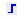
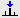
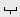

pps, ppf, ppl, pph, ppj, pp
NAME
pps - Perform peak picking on displayed region
ppf - Perform peak picking on full spectrum
ppl - Perform peak picking in predefined regions
pph - Perform peak picking and also show an intensity histogram
ppj - Perform peak picking and store peaks in JCAMP-DX forma
DESCRIPTION
Peak picking commands can be started from the command line or from the peak picking dialog box:
All peak picking commands open the dialog box with the corresponding option selected. The command pp, however, selects the last used option.
Auto-Pick peaks on displayed spectrum region
This option selects the command pps for execution. It determines all peaks within the displayed region. The following table shows an example of its output.
# | ADDRESS | FREQUENCY | INTENSITY | |
|---|---|---|---|---|
|
| [Hz] | [PPM] |
|
1 | 648.7 | 3698.825 | 7.3995 | 0.17 |
2 | 658.4 | 3687.649 | 7.3771 | 0.21 |
The peak list is created according to several criteria which are determined by various parameters. A data point is added to the peak list if:
- its intensity is higher than its two neighboring points
- its relative intensity is smaller than MAXI
- its relative intensity is larger than MI
- its absolute intensity is larger than PC*noise
- it lies within the displayed region as expressed by F2P and F1P
Where MAXI, MI and PC are processing parameters and noise is calculated from the first 32th part of the spectrum.
The values of MI and MAXI must be chosen in relation to the plot parameter CY; the intensity (in cm) of the reference peak. The reference peak is the highest peak in the spectrum or in a certain part of it. The spectral region which contains reference peak, is determined by the parameter PSCAL. For PSCAL = global, this is entire spectrum. The next table shows all possible values of PSCAL and the corresponding regions. For PSCAL = ireg or pireg, the reg file is interpreted. To create a reg file clickto switch to integration mode, clickand select Save regions to reg. The reg file can be viewed or edited with the command edmisc reg.
PSCAL | Peak used as reference for vertical scaling |
|---|---|
global | The highest peak of the entire spectrum. |
preg | The highest peak within the plot region. |
ireg | The highest peak within the regions specified in the reg file. If it does not exist, global is used. |
pireg | as ireg, but the peak must also lie within the plot region. |
sreg | The highest peak in the regions specified in scaling region file. This file is specified by the parameter SREGLST. If SREGLST is not set or it specifies a file which does not exist, global is used. |
psreg | as sreg but the peak must also lie within the plot region. |
noise | The intensity height of the noise of the spectrum. |
For PSCAL = sreg or psreg, the scaling region file is interpreted. This is used to make sure the solvent peak is not used as reference. The name of a scaling region file is typically of the form NUCLEUS.SOLVENT, e.g. 1H.CDCl3. For most common nucleus/solvent combinations, a signal region file is delivered with TopSpin. In several 1D standard parameter sets which are used during automation, PSCAL is set to sreg and SREGLST to NUCLEUS.SOLVENT as defined by the parameters NUCLEUS and SOLVENT.
pps evaluates the parameter PSIGN which can take three possible value:
- pos - only positive peaks appear in the list
- neg - only negative peaks appear in the list
- both - both positive and negative peaks appear in the list
Auto-Pick peaks on full spectrum
This option selects the command ppf for execution. It works like pps except that it picks peaks on the full spectrum.
Auto-Pick peaks in predefined regions (file peakrng)
This option selects the command ppl for execution. It picks the peaks in predefined regions. To define those regions:
- Click Define regions/peaks manually in the peaks dialog box or click  in the toolbar to switch to peak picking mode.
- Click  and drag the cursor inside the data window to define the regions.
- Right-click inside the data window and select Pick Peaks on ranges or enter ppl on the command line.
Like 1st option but peak list with histogram
This option selects the command pph for execution. It works like pps, except that it also shows an intensity histogram. This allows to get a quick overview over the intensity distribution.
Like 1st option but peak in JCAMP format
This option selects the command ppj for execution. It works like pps, except that the peak list is stored in JCAMP-DX format in the file pp.dx. This file resides in the processed data directory and can be used for external programs which require JCAMP peak lists. As the file created by tojdx it contains the acquisition and processing parameters but instead of data points it contains a list of peaks. The last part of the file pp.dx looks like:
##NPOINTS= 4 | |
|---|---|
##PEAK TABLE= (XY..XY) | |
2.3241 | 1.58 |
2.2962 | 1.18 |
1.9943 | 10.00 |
1.8725 | 1.36 |
The pp command can be used on 1D, 2D or 3D data. It recognizes the data dimensionality and opens a dialog box with the appropriate options and parameters.
INPUT PARAMETERS
Set by the user with edp or by typing mi, maxi etc.:
MI - minimum relative intensity (cm)
MAXI - maximum relative intensity (cm)
PC - peak picking sensitivity
PSIGN - peak sign (pos, neg, or both)
PSCAL - determines the region with the reference peak for vertical scaling
SREGLST - name of the scaling region file used for PSCAL = sreg/psreg
ASSFAC - assign the highest or second highest peak as reference for scaling
ASSWID - region excluded from second highest peak search
Set by the user with edp or by typing f1p, f2p etc.:
F1P - low field (left) limit of the plot region in ppm
F2P - high field (right) limit of the plot region in ppm
INPUT FILES
<dir>/data/<user>/nmr/<name>/<expno>/pdata/<procno>/
1r - real processed 1D data
proc - processing parameters
reg - region with the reference peak for PSCAL = ireg or pireg
OUTPUT FILES
<dir>/data/<user>/nmr/<name>/<expno>/pdata/<procno>/
peaks - peak list containing all peaks in the entire spectrum
peaklist.xml - peak list created by pp and pps for the Plot Editor
peak.txt - peak list created by pp and pps ( TopSpin 2.0 and older) or by convertpeaklist ( TopSpin 2.1 and newer)
peakhist.txt - peak list with histogram, created by pph
pp.dx - peak list in JCAMP-DX format created by ppj
USAGE IN AU PROGRAMS
PP
PPL
PPH
PPJ
SEE ALSO
peakw, gdcon, ldcon, mdcon, ppp, dconpl, dcon, li, lipp, lippf, int